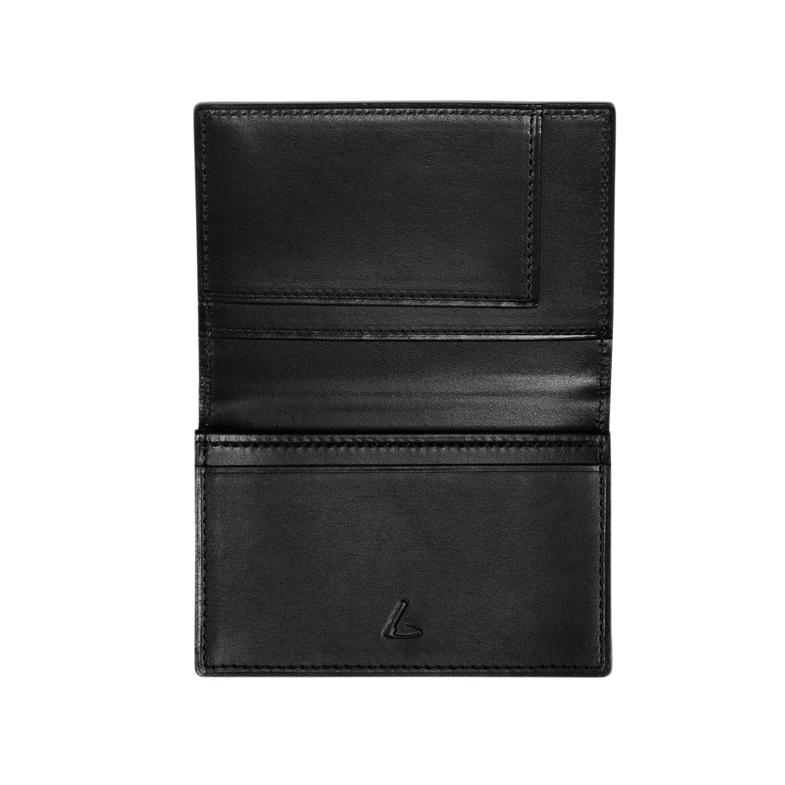

使うほどに味が出る、本革×手仕事の逸品

名刺入れは、初対面の相手に最初に見せる道具です。でも多くの人は、どこかの百貨店で買ったまま何年も使い続けている。
浅草で40年以上、革小物を作り続けてきた職人・久保田俊夫はそのことを惜しいと言います。「革は使うほど育つ。5年後、10年後、自分だけの色になっていく。そういうものを持ってほしい。」
KAKUREGAは、その言葉から生まれました。
久保田は長年、工房の扉を叩いてくれる人だけに革を届けてきました。でも今年、初めてこの場に立つことにしました。「このまま続けていたら、私の革が届く人数は限られてしまう。本当に良いものを知らないで一生を終えてほしくない人が、まだたくさんいると思った。」
| 比較項目 | 一般的な市販品 | KAKUREGA |
|---|---|---|
| 製造方法 | 機械縫製（大量生産） | 職人による手縫い |
| 素材 | 合皮・機械鞣し革 | 国産タンニン鞣し本革 |
| 経年変化 | 劣化するだけ | 使うほど深みが増す |
| 修繕 | 不可（使い捨て前提） | 工房で縫い直し対応可 |
| 一点もの | 均一な量産品 | 一点一点、手作り |
| 素材 | 栃木レザー（タンニン鞣しヌメ革） |
| サイズ | 縦60mm × 横100mm × 厚さ10mm（名刺20枚収納時） |
| カード収納 | 名刺最大20枚 |
| 縫製 | 手縫い（サドルステッチ・麻糸） |
| カラー | ナチュラル / チョコ / ブラック / ネイビー |
| 製造 | 東京・浅草（職人手作り） |
| 重量 | 約40g |
| イニシャル刻印 | オプションあり（アルファベット1〜3文字） |
久保田工房では現在、月間30〜40点の制作体制を整えています。支援数に応じて制作スケジュールを調整し、品質を落とさずにお届けします。
残り 12個
1960年東京生まれ。19歳から浅草の革工房で修行を始め、40年以上一貫して本革小物を手作りし続ける。年間制作数を意図的に絞り、一点一点の品質を優先する姿勢を守り続けてきた。「物を売るのではなく、その人の人生に入っていく道具を作っている」が口癖。2025年、65歳にして初めてのクラウドファンディングに挑戦。
40年間、工房でひとつひとつ作り続けてきました。でも私一人では、届けられる人数に限りがある。このプロジェクトを通じて、手仕事の価値を知ってくれる人が一人でも増えれば——それが、次の世代へ技術を繋ぐ力になります。ぜひ、応援してください。